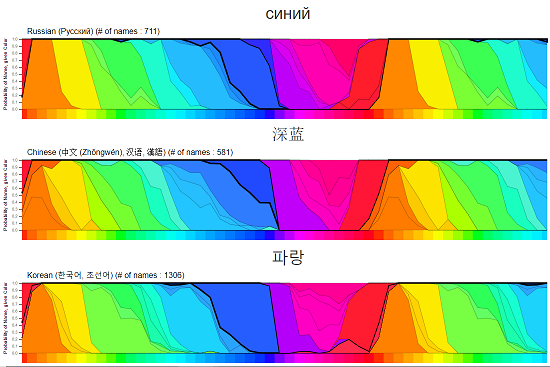
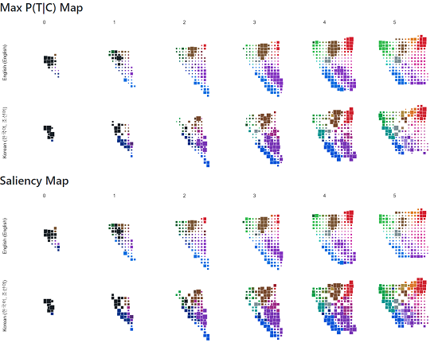
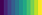

The Many Languages, Many Colors Project
Purpose
Different languages divide the color spectrum in different ways, which has been shown to influence how people perceive color. The Many Languages, Many Colors project is an attempt to measure these differences by collecting data and creating color models, and then share the results through visualizations and publicly released data sets. But first...
Take the Survey!
Before you look at what we found, please consider taking our 12 minute color perception survey. We could always use more data, and reading this post first might influence your answers.
Summary Blog Posts
Read our blog posts that summarize our results:
There is No "Blue" in Korean: Different Languages Have Different Colors
Visualizations
We have created a number of different visualizations to share our results:
Color Translator

Find translations and synonyms for colors in multiple languages. Compare the ranges of colors for different color names.
Hue Color Comparisons

Compare the terms used to divide the hue colors (the brightest, most saturated colors:  ).
).
Full Color Maps

Compare how languages divide the full color space.
Korean-English Translation Comparison

Compare online color translations to our suggested translations.
Korean-English Viridis Color Spectrum

Compare how Korean and English color names differ on the Viridis color spectrum (  ) that is sometimes used in visualizations.
Dataset
We have made our dataset, models, and visualizations freely available for download (both the 2019 EuroVis publication version and later updates). We plan on continuing to update this dataset as we collect more data.
Publication
Peer Reviewed Academic Paper: Color Names Across Languages: Salient Colors and Term Translation in Multilingual Color Naming Models
Note: This site has up-to-date visualizations, you can see the old 2019 EuroVis publication visualizations are here.